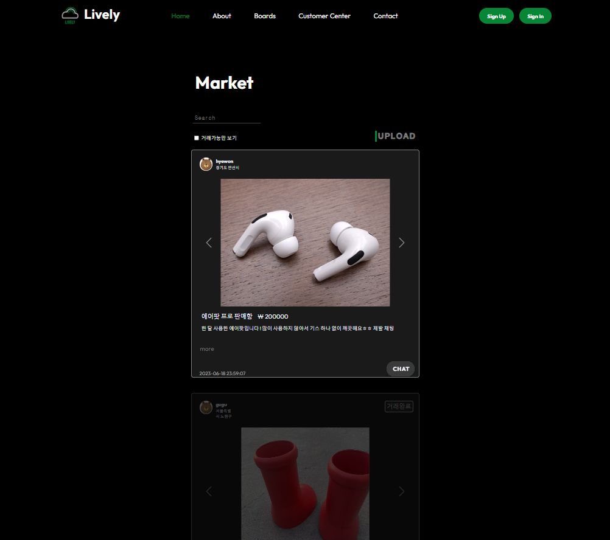
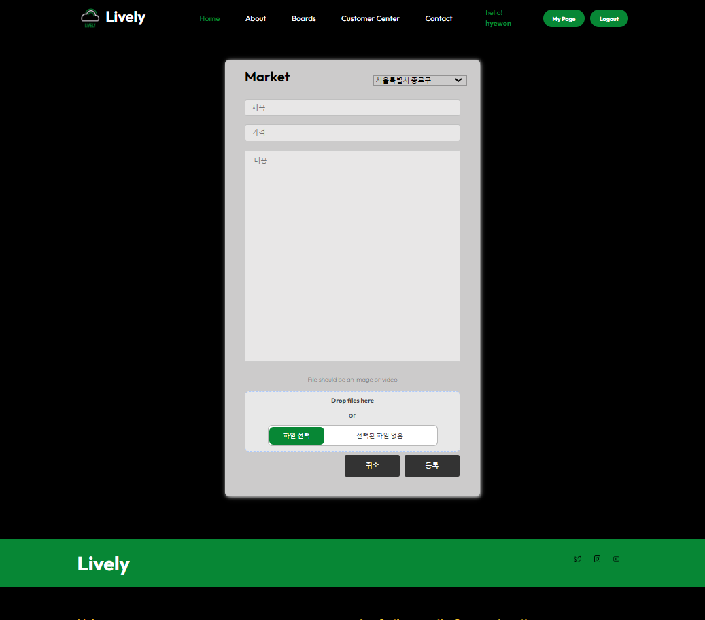
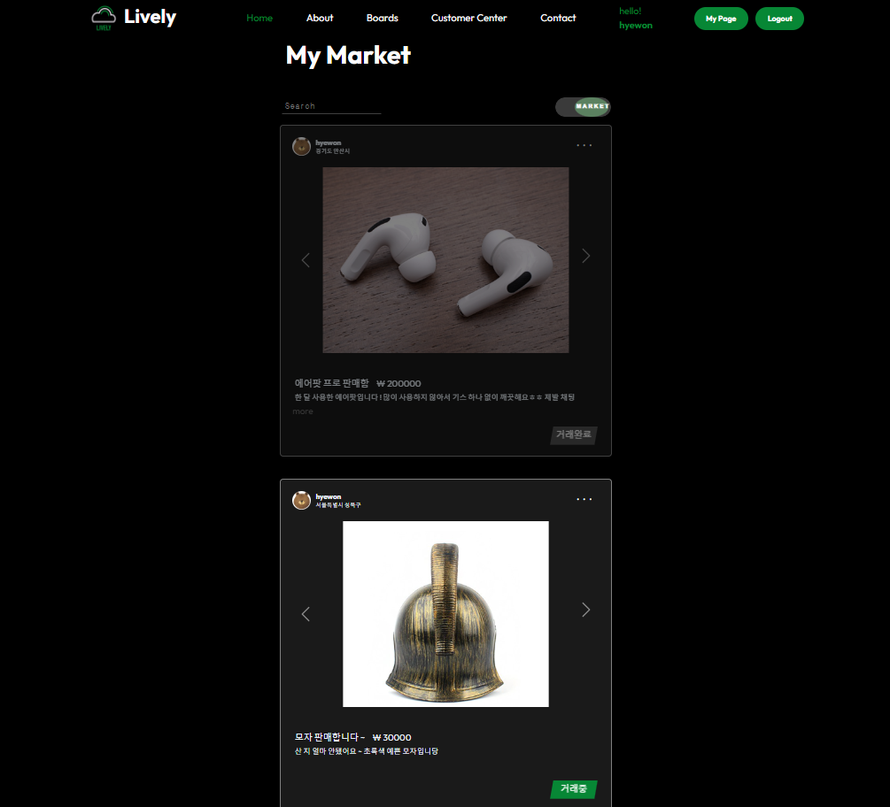
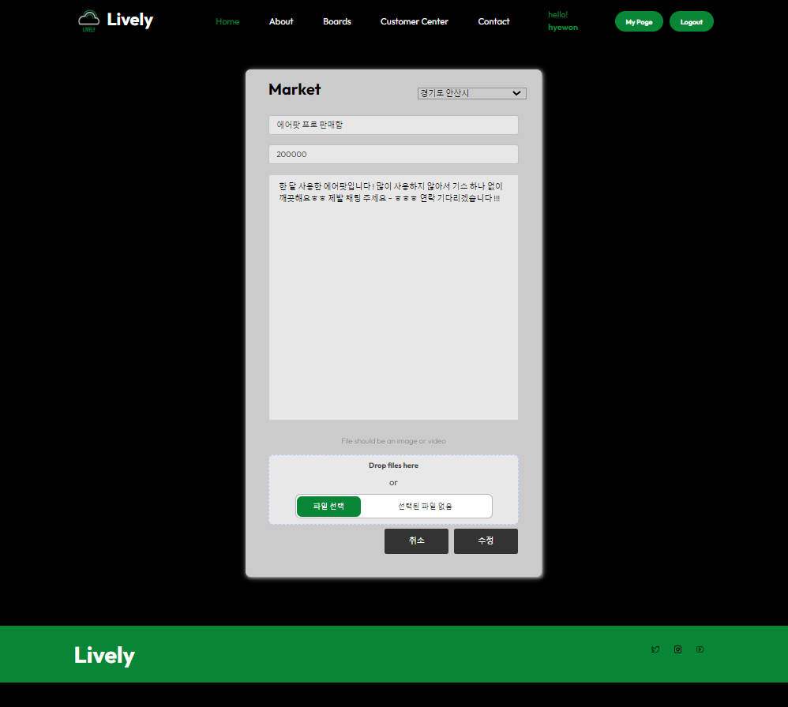
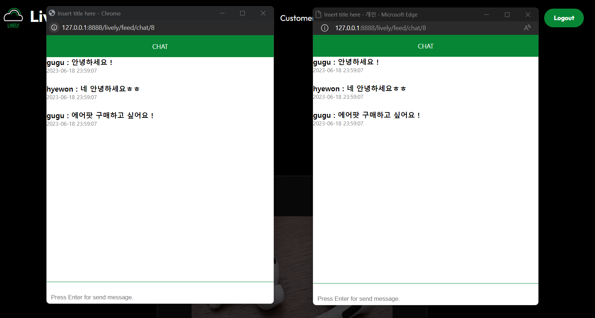

- [중고장터 게시글 목록]
- -'거래가능만 보기' 체크박스 클릭시 거래완료 게시글 사라짐
- -로그인 한 후에만 'UPLOAD' 버튼 클릭시 게시글 작성 페이지로 이동
- -게시글 내용이 50byte 이상이면 내용 숨겨짐
- 검색시 검색된 값을 전달해서 if조건문을 통해 해당 게시글만 선택
- -DB에서 거래상태가 거래완료인 경우 피드 상태 달라짐
- -chat 버튼 클릭시 DB의 중고장터의 번호가 전달되면서 채팅창 열림
- -market-list.js에서 forEach 함수를 사용해 각각의 피드 게시글에 more/hide 이벤트 리스너 할당함

- [중고장터 게시글 작성]
- -사진 여러장 슬라이드 형태로 보이도록 list형태로 삽입
- -'등록'버튼 클릭시 작성한 게시글이 DB에 저장됨

- [중고장터 나의 게시글 목록]
- -'Market' 버튼 클릭시 '나의 친구 구하기 게시판'으로 이동
- -'···' 버튼 클릭시 수정/삭제 선택 가능
- -DB에서 거래상태가 거래완료인 경우 피드 상태 달라짐
- -'거래중' 버튼 클릭시 DB에서 거래상태가 거래완료로 변경됨
- -'거래완료' 버튼 클릭시 DB에서 거래상태가 거래중으로 변경됨
- -게시글 내용이 50byte 이상이면 내용 숨겨짐
- -my-market-feed.js에서 forEach 함수를 사용해 각각의 피드 게시글에 more/hide 이벤트 리스너 할당함
- -검색시 검색된 값을 전달해서 if조건문을 통해 해당 게시글만 선택

- [중고장터 나의 게시글 수정]
- -DB에 저장된 값을 session에 전달해 EL표현식으로 가져와 화면에 표시됨
- -'수정' 버튼 클릭시 변경된 내용으로 DB 정보가 바뀌며 게시글 목록에 나타남

- [중고장터 채팅]
- -웹소켓을 사용해 다른 로그인 한 유저와 채팅 가능
- -메세지, 보내는 사람, 게시글 번호, 보낸시각이 담긴 데이터 덩어리를 json형태로 가져와 화면에 띄움